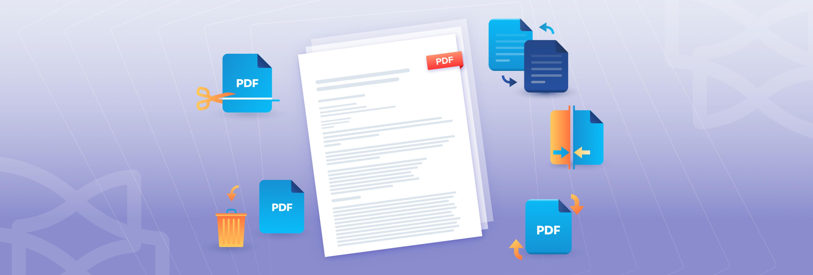
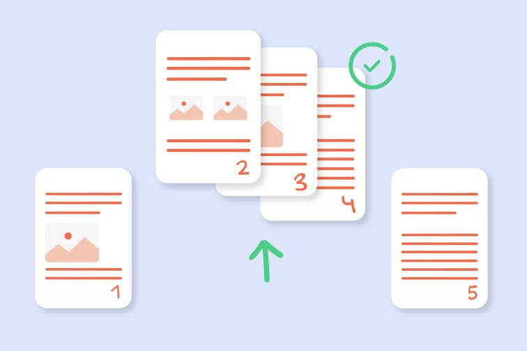
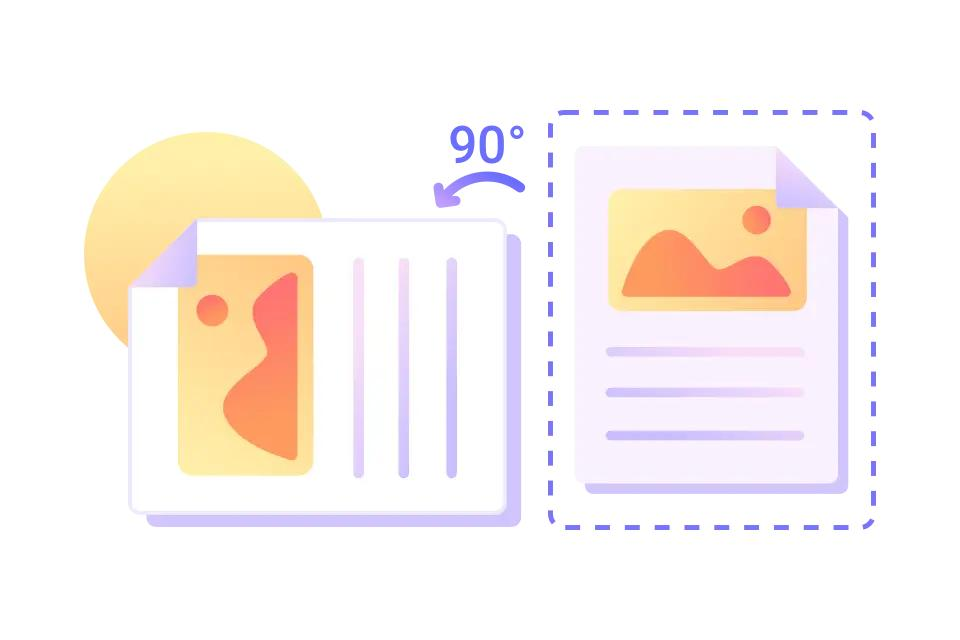
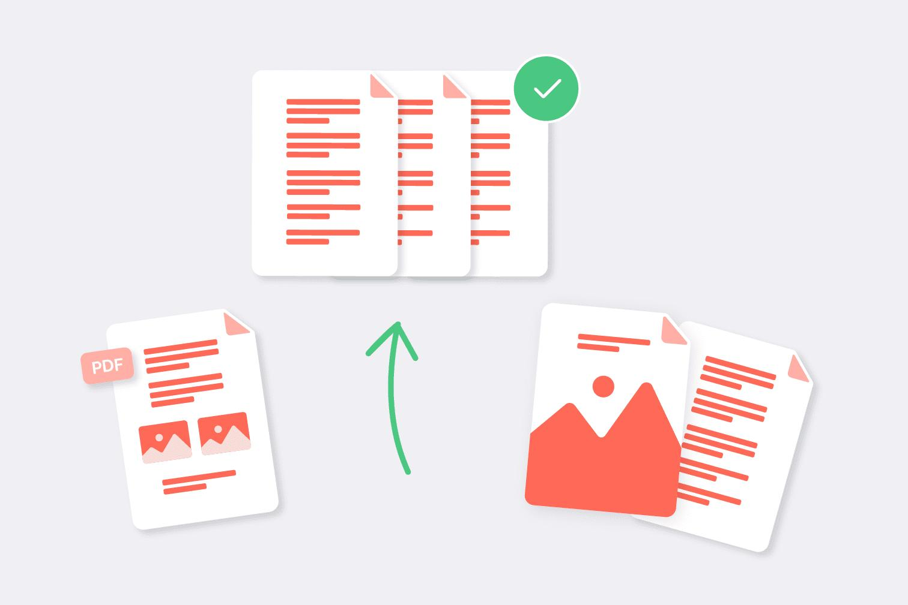

Have you ever received a PDF containing dozens of pages when you only need a few? Perhaps one scanned page is sideways, and you need to combine the corrected pages with information from another document.
Opening multiple files, saving separate copies, rotating pages, and rebuilding everything in the correct order can quickly become confusing.
The solution is to treat the task as one document workflow: split the PDF, rotate the pages that need correcting, and merge the selected pages into a final document.
In this guide, you'll learn how to carry out each step, avoid missing or duplicated pages, and check the finished PDF before sharing it.
Quick answer: How do you split, rotate, and merge a PDF?
Follow this order:
- Plan the final document. Identify the pages you need and the order in which they should appear.
- Split or extract pages. Separate the required pages from the original PDF.
- Rotate incorrect pages. Correct the orientation of individual pages or selected page ranges.
- Merge the documents. Combine the selected pages and other required PDFs in the intended order.
- Verify the result. Check page count, orientation, sequence, readability, and the final filename.
PDF software such as Adobe Acrobat supports splitting, extracting, rotating, rearranging, and combining pages. The exact controls depend on the application you use.
You do not always need three separate operations. Some PDF editors let you extract, rotate, and rearrange pages within one interface. However, treating each task as a separate stage makes it easier to check your work.
1. Start with a realistic PDF workflow
Imagine you have a 12-page project report containing:
- Pages 1–4: Introduction and project overview
- Pages 5–7: Supporting documents
- Pages 8–10: Financial summary
- Pages 11–12: Appendix
You need a new PDF containing pages 1–3, page 6, and pages 8–10. Page 6 is sideways, and you also need to include a separate two-page approval document at the end.
Your final document should contain nine pages:
- Three introduction pages
- One corrected supporting-document page
- Three financial-summary pages
- Two approval pages
This is a hypothetical example to demonstrate the workflow, not a measured test using an actual PDF.
Example document plan
| Stage | Action |
|---|---|
| Original report | 12 pages |
| Extract required pages | Pages 1–3, 6, and 8–10 |
| Correct orientation | Rotate page 6 as needed |
| Merge the approval document | Add two pages at the end |
| Final document | 9 pages. Correct sequence, orientation, and content. |
Planning the page sequence first prevents unnecessary editing and makes the final review much easier.
2. Step one: Split the PDF or extract the pages you need
Splitting and extracting are related operations, but they serve slightly different purposes.
- Splitting divides a PDF into multiple files, often by page range, file size, or document sections.
- Extracting selects specific pages and creates a new document from them.
Some PDF applications provide both options. Adobe Acrobat's page-organization tools, for example, support splitting documents and extracting individual pages or groups of pages.

How to extract selected PDF pages
- Open the original PDF in a PDF editor or page-extraction tool.
- Locate the option for extracting pages or organizing pages.
- Select the pages you need.
- Choose whether the extracted pages should become one new PDF or separate files, if your tool offers that choice.
- Save the result under a new filename.
- Open the extracted PDF and check its contents.
For the example report, the pages you want are 1–3, 6, and 8–10.
If your tool supports entering page ranges, you may be able to select these ranges directly. Otherwise, use page thumbnails to select the required pages.
What if you need several separate PDFs?
Suppose you need to send the financial summary to one person and the supporting documents to another. You could split the document into logical sections instead of creating one combined file.
Use meaningful filenames such as:
- project-introduction.pdf
- supporting-documents.pdf
- financial-summary.pdf
- approval-documents.pdf
Clear filenames help prevent confusion when you later merge the documents.
Important: Keep the original PDF unchanged. Work on a copy so you can recover any pages accidentally omitted during extraction.
3. Step two: Rotate the pages that are sideways or upside down
Scanned documents often contain pages with inconsistent orientation. For example, most pages may be portrait, while one scanned receipt or table appears sideways.
You can usually correct these pages by rotating them in 90-degree increments.

How to rotate an individual PDF page
- Open the extracted PDF or the document you want to correct.
- Switch to the page thumbnails or page-organization view.
- Select the incorrectly oriented page.
- Choose Rotate Left or Rotate Right.
- Inspect the page and repeat if necessary.
- Save the document and reopen it to verify the saved orientation.
The menu names may vary between PDF applications, but the principle is the same: select the actual page and apply a rotation operation.
Rotating the view is not always the same as rotating the page
This distinction is important.
Some PDF viewers offer a temporary view-rotation command that changes how the page appears on your screen. It may not change the saved document. Adobe documents this distinction between rotating a view and saving an actual page rotation.
If the page must remain correctly oriented when another person opens the PDF, use the page-rotation or organize-pages function, save the document, and reopen it to confirm the result.
Common rotation mistakes
- Rotating every page when only one needs correction.
- Rotating a page in the viewer without saving the actual change.
- Selecting the wrong page because the thumbnails are too small.
- Rotating a page twice and leaving it upside down.
- Forgetting to inspect landscape tables, receipts, or signatures after rotation.
Always confirm that the text is upright and readable, not merely that the page has changed orientation.
4. Step three: Merge the selected PDFs into one document
Once the pages have been extracted and corrected, you can assemble the final document.
Merging combines two or more PDF files into one PDF. Many PDF editors also let you rearrange files or individual pages before saving the combined result.

How to merge PDFs
- Open a PDF merging tool.
- Add the extracted document.
- Add the other PDF files you want to include.
- Arrange the files in the required order.
- If supported, expand the file thumbnails to arrange individual pages.
- Start the merge operation.
- Save the resulting document with a descriptive filename.
For the example project, the order is:
- Introduction pages
- Corrected supporting document
- Financial summary
- Approval document
If the merging tool only allows you to rearrange complete files, prepare the extracted files in the correct sequence before merging. You may need a page-organization feature to fine-tune the order afterward.
What if pages from the same PDF need to appear in different places?
Do not assume that adding the same PDF twice will automatically produce the correct result. It may add unwanted pages or create duplicates.
Instead, extract the necessary page groups into separate files, arrange those files in the required sequence, and merge them. Alternatively, use a PDF editor that lets you move individual page thumbnails before saving.
This approach provides better control over the final sequence.
5. The most important step: Check the final page order
A PDF can look complete at first glance while still containing missing pages, duplicated sections, or misplaced attachments.
Before sharing your rebuilt document, compare the final PDF with your original plan.
For the hypothetical nine-page report, the expected order is:
| Final page | Expected content | Check |
|---|---|---|
| 1 | Introduction, original page 1 | Correct |
| 2 | Introduction, original page 2 | Correct |
| 3 | Introduction, original page 3 | Correct |
| 4 | Supporting document, original page 6 | Upright |
| 5 | Financial summary, original page 8 | Correct |
| 6 | Financial summary, original page 9 | Correct |
| 7 | Financial summary, original page 10 | Correct |
| 8 | Approval document, page 1 | Correct |
| 9 | Approval document, page 2 | Correct |
This is the intended sequence for the example, not a record of a processed file.
How to verify page order efficiently
- Compare the final page count with your plan.
- Review the page thumbnails from beginning to end.
- Check the first and last page of every section.
- Look for duplicate pages and missing attachments.
- Confirm that rotated pages remain readable.
- Check that section transitions make sense.
- Open the final saved file rather than relying only on the editing preview.
If the original PDF contains printed page numbers, verify those as well. The PDF's position number and the page number printed on the document may not match.
6. How to rebuild a PDF without losing quality
Splitting, rotating, and merging pages generally do not require re-creating every page as a new image. When the software handles the PDF structure appropriately, these operations can preserve the original page content.
However, outcomes depend on the tool and the operations performed. Converting pages to images, printing to a new PDF, or using additional compression may change text quality, searchable content, or document features.
To protect the original quality:
- Use page-level PDF operations instead of converting pages into screenshots.
- Keep a backup of the source document.
- Avoid unnecessary conversions between file formats.
- Inspect text, images, and fine details after editing.
- Confirm that links, bookmarks, forms, or annotations important to your workflow still work.
Adobe notes that page extraction can preserve associated content such as form fields, comments, and links, although some document structures may not transfer in every circumstance.
Practical rule: If the document is important, compare the final PDF with the original before deleting your working copies.
7. A better workflow for different document types
The order of operations may vary depending on the source PDF and the desired result.
| Document type | Recommended workflow |
|---|---|
| Scanned paperwork | Extract the necessary pages, rotate sideways scans, check readability, and then merge the selected documents. Preserve the original scans for reference. |
| Reports with appendices | Plan the final section order first. Extract the relevant chapters, keep tables with their supporting explanations, and append the required attachments at the end. |
| Invoices and forms | Verify invoice numbers, dates, and signatures before deleting or moving pages. Keep transaction-specific pages together and use clear filenames. |
The same three tools can support all these workflows, but the checks you perform should reflect the document's purpose.
8. Common mistakes when splitting, rotating, and merging PDFs
Avoid these problems when rebuilding a document:
- Losing track of original page numbers. Write down the pages you need before extracting them. Remember that page position and printed page numbering may differ.
- Rotating the wrong page. Select the page thumbnail carefully and inspect it after rotation.
- Saving only a temporary view change. Confirm that the page's actual orientation has been changed and saved.
- Merging files in the wrong order. Arrange the files before merging and check the sequence afterward.
- Adding an entire PDF when only a few pages are required. Extract the required pages first to avoid unwanted content and duplicate sections.
- Overwriting the original document. Save the rebuilt version separately until all checks are complete.
- Ignoring sensitive information. If a PDF contains confidential information, use a tool approved for that information and review its upload, storage, and deletion policies before using an online service.
- Forgetting the final review. Open the saved PDF and check page count, orientation, order, and readability before sharing it.
9. Which QuickToolsPK tool should you use?
Choose the tool that matches your current step.
- Split PDF: Use this when you need to divide a large document into separate files or extract selected page ranges, depending on the tool's available options. Best for: Selecting the pages you need.
- Rotate PDF: Use this to correct sideways or upside-down pages. Check whether the tool supports rotating individual pages or selected ranges. Best for: Correcting page orientation.
- Merge PDF: Use this to combine the prepared PDFs into one document and arrange the files in the desired sequence if the tool supports reordering. Best for: Rebuilding the final document.
The tool names above reflect the intended QuickToolsPK workflow. Confirm each live page's exact capabilities before publishing instructions that promise a particular operation.
Quick summary
- Plan the final page sequence before editing.
- Split or extract the pages you actually need.
- Rotate individual pages when their orientation is incorrect.
- Merge the prepared files in the intended order.
- Check for missing pages, duplicates, and orientation problems.
- Save the rebuilt PDF under a new filename.
- Reopen the final file and verify its contents before sharing it.
Frequently asked questions
Can I split a PDF, rotate pages, and merge it again?
Can I rotate only one page in a PDF?
Does splitting a PDF reduce its quality?
How do I merge selected pages from different PDFs?
Why is my PDF still rotated after saving?
Will merging PDFs change their page numbers?
How can I make sure I have not missed any pages?
Is it safe to use an online PDF tool?
Conclusion
Splitting, rotating, and merging a PDF are most effective when treated as one organized workflow rather than three unrelated tasks.
Start by deciding which pages belong in the final document. Extract those pages, correct any orientation problems, and merge the prepared files in the right sequence. Then verify the saved PDF for missing content, duplicates, and readability.
For your next document, use the QuickToolsPK Split PDF, Rotate PDF, and Merge PDF tools as the three stages of your workflow. Keeping the original file and checking the final result will help you avoid common mistakes and produce a cleaner, more professional document.